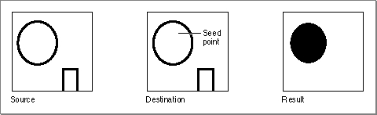

Legacy Document
Important: The information in this document is obsolete and should not be used for new development.
Important: The information in this document is obsolete and should not be used for new development.


SeedFill
To determine how far filling will extend from a seeding point, use theSeedFillprocedure.
PROCEDURE SeedFill (srcPtr,dstPtr:\xDDPtr; srcRow,dstRow,height,words, seedH,seedV:\xDDInteger);
srcPtr- A pointer to the source bit image.
dstPtr- On input, a pointer to the destination bit image; upon return, a pointer to the bitmap containing the resulting mask.
srcRow- Row width of the source bitmap.
dstRow- Row width of the destination bitmap.
height- Height (in pixels) of the fill rectangle
.words- Width (in words) of the fill rectangle.
seedH- The horizontal offset (in pixels) at which to begin filling the destination bit image.
seedV- The vertical offset (in pixels) at which to begin filling the destination bit image.
DESCRIPTION
TheSeedFillprocedure produces a mask showing where bits in an image can be filled from a starting point, like the paint pouring from the MacPaint paint-bucket tool. TheSeedFillreturns this mask in thedstPtrparameter. This mask is a bitmap filled with 1's only where the pixels in the source image can be filled. This is illustrated in
Figure 3-24. You can then use this mask with theCopyBits,CopyMask, andCopyDeepMaskprocedures.Figure 3-24 A source image and its resulting mask produced by the
SeedFillprocedure
Point to the bit image you want to fill with thesrcPtrparameter, which can point to the image's base address or a word boundary within the image. Specify a pixel height and word width with theheightandwordsparameters to define a fill rectangle that delimits the area you want to fill. The fill rectangle can be the entire bit image or a subset of it. Point to a destination image with thedstPtrparameter. Specify the row widths of the source and destination bitmaps (theirrowBytesvalues) with thesrcRowanddstRowparameters. (The bitmaps can be different sizes, but they must be large enough to contain the fill rectangle at the origins specified by thesrcPtranddstPtrparameters.) Figure 3-25 illustrates these parameters for the source and destination bit images.You specify where to begin filling with the
seedHandseedVparameters: they specify a horizontal and vertical offset in pixels from the origin of the image pointed to by thesrcPtrparameter. TheSeedFillprocedure calculates contiguous pixels from that point out to the boundaries of the fill rectangle, and it stores the result in the bit image pointed to by thedstPtrparameter.Calls to
SeedFillare not clipped to the current port and are not stored into QuickDraw pictures.Figure 3-25 Parameters for the
SeedFillandCalcMaskproceduresSEE ALSO
For color graphics ports, use theSeedCFillprocedure, which is described in the chapter "Color QuickDraw."